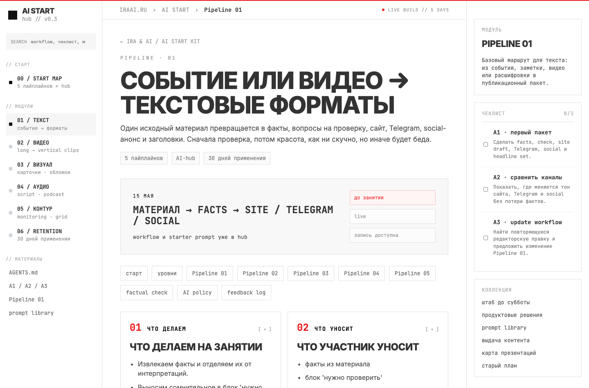

курс
Когда и что будет: текст, видео, визуал, аудио, hub, агенты.
Сегодня смотрим всю программу, портал, правила практики и делаем первый research-прогон: найти источники, проверить их, собрать human gate.
Когда и что будет: текст, видео, визуал, аудио, hub, агенты.
Где AI может ускорить вашу работу без потери редакционного решения.
Сделать search-прогон и сохранить вывод: source, риск, gate.
Нейронок больше, чем времени на курсе. Мы покажем рынок, но внедрять будем только то, что встраивается в редакционный pipeline.
быстрее собрать source map, риски, варианты, заголовки
быстрее разложить материал под Telegram и короткие форматы
быстрее найти клипы, hooks, subtitles, cover text
собрать правила, examples и обновления в общий hub
материал → факты → форматы → QA
первый детальный маршрутlong video → candidates → clips → covers
вертикали и нарезкаsource → visual brief → cards / cover
обложки, карточки, графикаtext → spoken script → audio fragment
аудиоверсии и подкастовый слойsignals → digest → grid → update
контент-сетка и мониторингSCOUT: найти источники с разных углов: факты, контекст, сомнения.
CRITIC: отсеять слабые, рекламные и непроверяемые источники.
METHOD: зафиксировать, как искали и почему доверяем.
ACTION: превратить найденное в editorial source map.
GATE: что человек обязан проверить перед публикацией.
Возьми материал ниже и разложи его для редакционной работы.
Не пиши финальную публикацию.
Работай как маленькая research-команда:
1. SCOUT: дай 5 поисковых углов:
факт, локальный контекст, отрасль, скептик, свежие изменения.
2. CRITIC: какие источники будут слабыми и почему.
3. METHOD: какие 2-3 источника нужны для уверенности.
4. SOURCE MAP:
source / link / подтверждает / не подтверждает / риск.
5. ACTION: что можно сделать из этого для сайта, TG, social.
6. HUMAN GATE: что редактор проверяет руками.
7. Если данных нет, пиши: "нет в источнике".
Полный промпт лежит в практике safe source.Exaexa.ai: основной search layer для AI
Tavilyальтернатива для search API и агентных сценариев
Perplexityno-code fallback: быстро начать без настройки и API
Codex / Claude Codeможно подключать API и собирать свои рабочие команды
курсидем к системному маршруту, а не к ручному поиску каждый раз
ловит пластиковые фразы и возвращает текст к факту
решает, что можно загружать в AI, а что нельзя
не выпускает шаблонный и непроверенный output
фиксирует: source, AI step, human gate, пример
Ты помогаешь редакции внедрять AI безопасно.
Возражение: [клише / данные / репутация / нет времени].
Собери один рабочий файл для hub:
1. В чем риск для редакции.
2. Какой AI-шаг разрешен.
3. Что AI не имеет права делать.
4. Human gate: что проверяет человек.
5. Prompt: текст команды для ChatGPT / Claude.
6. Output format: таблица или чеклист.
7. Пример на safe source.
Не пиши общую методологию.
Сделай файл, который редактор сможет открыть и применить.Собрать 5 запросов под разные углы поиска.
6 минутНайти / оценить источники: что подтверждают и где слабые места.
10 минутСобрать source map: факты, пробелы, риски, форматы.
8 минутСформулировать human gate и один вывод в hub.
6 минутЗдесь лежат workflows, prompts, gates, examples, записи и домашние задания. Так удачные приемы не остаются в личных чатах.

1. Установить Codex и открыть рабочую папку `ai-start-playground`.
2. Создать папки: `sources`, `prompts`, `gates`, `outputs`, `hub`.
3. Поставить первый research-skill / сохранить его промпты в `prompts`.
4. Все ошибки установки и вопросы принести в чат до Text OS.
AI предлагает структуру, черновик, кандидатов и варианты. Ответственность за факт, тон, контекст и выпуск остается у человека.